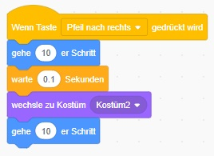

Wie lässt man Scratch animiert gehen - Variante 1
Das ist die Basisvariante.
Warte bis Pfeil nach rechts gedrückt wird
Bewege dich 10 nach rechts
Warte 0.1 Sekunden
Bewege die Füße, indem du zum Kostüm 2 wechselst
Bewege dich 10 nach rechts
